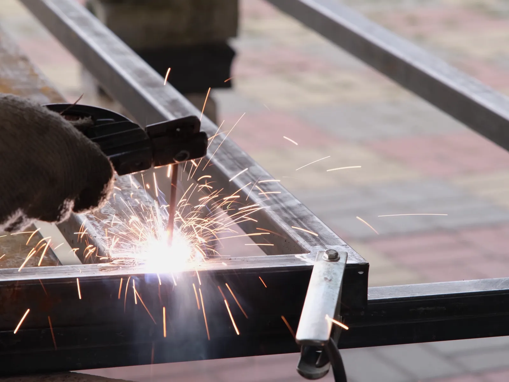
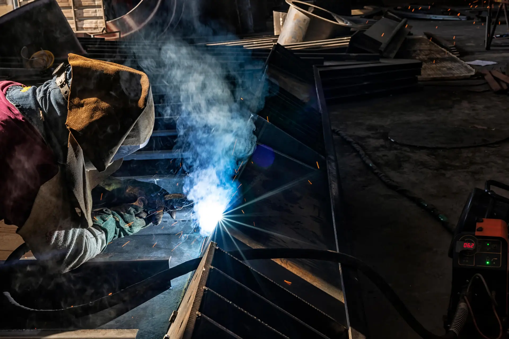
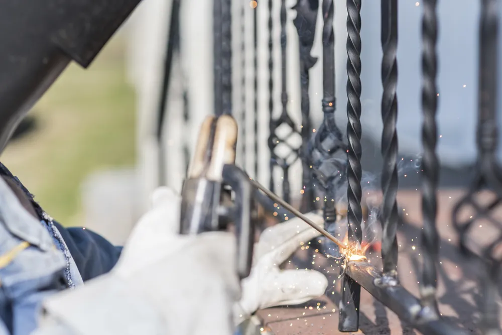
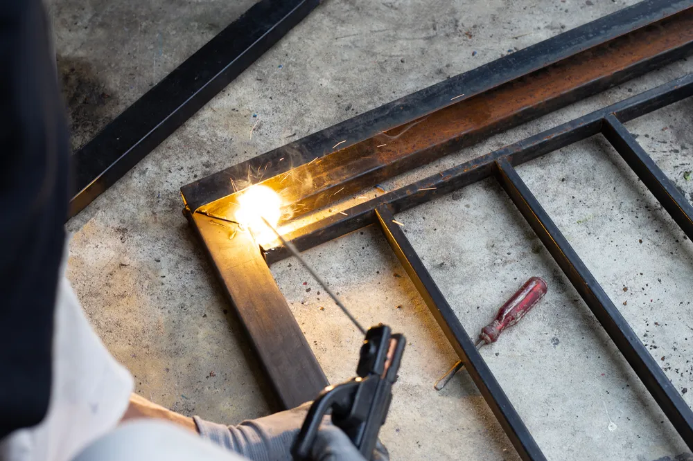

Home · Service Areas · Metairie
Mobile Welding in Metairie, LA
At Big Easy Mobile Welders, we weld gates, railings, fences and custom steel, aluminum and stainless pieces on site for Metairie homes and businesses. Our licensed, insured welders roll up with a fully equipped mobile unit and fix the metal right where it stands.

We come to the jobWhat Is Included in Mobile Welding in Metairie?
A mobile welding job in Metairie covers the whole visit: a free, no-obligation estimate, an experienced welder who arrives with a fully equipped mobile unit, prep that clears rust and paint before the first weld, and a walkthrough once the work is done.
A Free Estimate First
We check the metal and the damage, then quote the job for free, with no obligation and no hidden fees.
Licensed, Insured Welders
A licensed, insured and highly trained welder handles your job, backed by more than 20 years of experience.
The Shop Comes to You
Our fully equipped mobile unit brings the tools to your property, so gates and railings get welded where they stand.
Clean Prep
We clear rust, paint and scale from the joint with brushes and grinders before we weld.
Steel, Aluminum and Stainless
We take on mild steel, aluminum and stainless steel work, big and small.
A Walkthrough at the End
When the weld is done, we go over it with you, keep payment easy and back the work with a satisfaction guarantee.

Why Do Homeowners and Businesses in Metairie Call a Mobile Welder?
Metairie property owners call a mobile welder when metal around the home or business stops doing its job. Gates sag and drag, railing posts rust loose at the base, fence panels bend after a storm, and older steel window frames corrode. Shops and offices call for custom brackets, structural steel and repairs too.
- Sagging Driveway Gate
- Gate Latch That Will Not Catch
- Rusted Railing Posts
- Loose Stair Railing
- Storm-Bent Fence Panels
- Rusted Metal Window Frames
- Cracked Trailer Frame
- A Custom Piece You Cannot Buy
What Welding Services Do We Offer in Metairie?
Our mobile welding services in Metairie cover pipe, fence, gate, iron railing, arc and custom welding, plus window frame repairs, specialized jobs and metal fabrication. Each one is handled at your home or business by our own experienced welders, and each starts with a free estimate.

Pipe Welding
Pipe and pipeline repair on site, with stick and gas-shielded processes matched to the pipe.
View pipe welding →
Fence Welding
Fence repairs and custom fence fabrication, with the material and process chosen for your fence.
View fence welding →
Gate Welding
Gate repairs and custom gates in steel or aluminum, with materials and tools covered in your estimate.
View gate welding →
Iron Railing Welding
Custom indoor and outdoor railings for stairways, decks and balconies, built to fit your property.
View railing welding →
Arc Welding
Shielded and non-shielded arc welding for commercial and residential customers.
View arc welding →
Custom Welding
Custom ironwork, estimated before we start so we arrive with the right equipment for the job.
View custom welding →
How Do You Know It Is Time to Call a Welder in Metairie?
It is time to call a welder in Metairie when metal starts to move, crack or flake. A gate that drags, a railing that wobbles or rust that keeps coming back at a joint is usually easier to repair early, before the metal around it weakens and a bigger section has to be replaced.
Movement Where There Should Be None
A railing that shifts under your hand or a gate that drops on its hinges often points to a failed weld or a rusted post.
Cracks at the Joints
Hairline cracks along a weld can spread as the metal flexes. Caught early, they may need a repair instead of a new section.
Rust That Flakes or Bubbles
Rust that flakes, pits or swells has started eating into the steel. That metal may need to be cut out and replaced before welding.
What Makes Welding Work on Metairie Homes Different?
Welding work in Metairie differs because most properties are detached homes built decades ago, with gates, railings, fences and window frames that have weathered years of humid air. Busy commercial corridors add storefronts and offices, so a welder in Metairie handles both older residential ironwork and commercial metalwork.

Metairie's housing and street layout shape the metalwork we see most often.
- Mostly Detached Homes.The Census Bureau's 2020 to 2024 American Community Survey counts 61.2 percent of Metairie housing units as single-family detached homes.
- Housing From the 1960s and 1970s.The same survey dates about 49 percent of Metairie homes to 1960 through 1979, and nearly 7 in 10 to before 1980.
- Busy Commercial Corridors.Jefferson Parish's tourism office calls Veterans Memorial Boulevard a center of commercial activity and Causeway Boulevard the East Bank's business district.
- Humid Lakeside Air.With Lake Pontchartrain on its northern edge, Metairie sits in humid air that can speed rust on bare, uncoated steel.

Why Choose a Local Mobile Welding Team in Metairie?
A local mobile welding team in Metairie brings the shop to your property, so heavy gates and fixed railings do not have to be taken down and hauled away. You also work with a locally owned company that has served New Orleans for many years and backs its work with follow-up support.
Locally Owned
We are a locally owned company that has served New Orleans and its neighboring cities for many years.
Fully Equipped Mobile Units
Our mobile units carry the welding machines and tools to you, so fixed metal gets repaired in place.
Experienced, Licensed Welders
Licensed, insured and highly trained welders handle every repair.
Clear Pricing
Free, no-obligation estimates, transparent pricing with no hidden fees and easy payment options.
How Does Our Mobile Welding Service Work in Metairie?
Mobile welding in Metairie runs in four steps: ask for a free estimate by phone or through our online form, approve the quote and choose a weekday visit, let our welders prep and weld the metal on site, then go over the finished job with us, with follow-up support afterward.
Request a Free Estimate
Call (504) 370-2757 or use our online form, and tell us what needs welding.
Pick a Convenient Time
After you approve the quote, choose a slot between 8 AM and 3 PM, Monday through Friday.
We Weld on Site
Our welders bring the tools, prep the metal and complete the weld at your property.
Walkthrough and Follow-Up
We go over the finished weld with you and stay a phone call away for follow-up.
 The rig comes to you
The rig comes to youWhat Should You Know Before Hiring a Welder in Metairie?
Before hiring a welder in Metairie, know what the piece is made of if you can, how a welder will reach it, and what result you want, whether that is a repair, a reinforcement or a new custom piece. Those details let us quote the job accurately and load the right gear.
The Metal and the Damage
Steel, aluminum, stainless steel and cast iron each weld differently. A close photo of the damage helps us plan.
Access for the Mobile Unit
Note locked gates, pets and parking. Our guide on what to do before the mobile welder arrives has a full checklist.
Repair or Something New
Repairs and custom fabrication are planned and priced differently, so tell us which one you need.
Can Our Mobile Welders Reach Cities Near Metairie?
The same mobile welding team that works in Metairie also covers New Orleans, Kenner, Gretna and St. Rose, plus LaPlace, Slidell, Mandeville, Covington, Madisonville, Hammond and Baton Rouge. Every city gets the same experienced welders, fully equipped mobile units and free, no-obligation estimates.
- New Orleans
- Metairie
- Kenner
- Gretna
- St. Rose
- LaPlace
- Slidell
- Mandeville
- Covington
- Madisonville
- Hammond
- Baton Rouge
Not sure we cover your street?
Request a free estimate or call us, and we will confirm before we book the job.
Where Our Rigs Roll
Schematic, not to scale. New Orleans and the 11 nearby cities we serve.
About Metairie
Metairie lies on the south shore of Lake Pontchartrain, between New Orleans and Kenner, in Jefferson Parish.
Jefferson Parish's Largest Community
The parish tourism office describes Metairie as Jefferson Parish's largest community. The parish was established in 1825 and named for Thomas Jefferson.
A Census Designated Place
The Census Bureau counts Metairie as a census designated place rather than an incorporated city.
Population and Land
The 2020 Census counted 143,507 people in Metairie, up from 138,481 in 2010, on about 23.26 square miles of land.
Things To Do
Time out in Metairie often means a large parish park, the Bucktown lakefront or the shopping district around Lakeside.
Lafreniere Park
The 155-acre park on Downs Boulevard has a 2-mile jogging trail, a carousel, a disc golf course and a 20-acre lagoon.
Bucktown
Once a small fishing village on the lakefront, Bucktown is known for seafood restaurants and markets and the Bucktown Marsh Boardwalk.
Fat City and Lakeside
Lakeside Shopping Center, which the parish tourism office calls the region's highest-grossing shopping center, sits beside Fat City, a district known for its murals.
Nearby Suburbs
Metairie sits near the middle of our service area, with neighbors to the east, to the west and across the river.
New Orleans
New Orleans borders Metairie to the east, linked by Veterans Boulevard and the Pontchartrain Expressway.
Kenner
Kenner is Metairie's neighbor to the west and home to Louis Armstrong New Orleans International Airport.
Gretna
Gretna sits across the Mississippi River on the West Bank and is the seat of Jefferson Parish government.
Interesting and Fun Facts
A few facts about Metairie, from the origin of its name to the famous names tied to it.
A Name From the Farm
Metairie takes its name from a French term for a small tenant farm that paid its landlord with a share of the harvest.
The Causeway
The Lake Pontchartrain Causeway spans 24 miles between the south shore and the north shore. Its two bridges were completed in 1956 and 1969.
Famous Names
Mahalia Jackson is buried at Providence Memorial Park in Metairie, and the Saints and Pelicans keep their headquarters and training facility in Metairie.
Public Transportation
Jefferson Parish Transit, known as JP Transit, runs the buses, the on-demand zone and the paratransit service Metairie riders use.
- E1 Veterans-Airport: from the airport along Veterans Boulevard to the Canal Boulevard Terminal at the cemeteries in New Orleans, seven days a week.
- E2 Airline Drive: along Airline Drive from the Kenner Terminal into downtown New Orleans.
- E5 Causeway: along Causeway Boulevard and West Esplanade Avenue, crossing every East Bank route.
- E8 Elmwood: from East Jefferson General Hospital along West Esplanade Avenue and Clearview to Jefferson Highway.
- Move Metairie: on-demand rides in the Metairie Road District, booked through the Lyft app or by phone.
- MITS: paratransit for riders with disabilities who cannot use the fixed-route buses.
How Do You Get a Free Mobile Welding Estimate in Metairie?
Calling (504) 370-2757 or sending our online estimate form gets you a free welding estimate in Metairie. Share what needs welding, the metal it is made of and where it sits on the property, and we come back with a transparent, no-obligation price.
Loading the estimate form...
If it does not appear, call us at (504) 370-2757.

What Do People Ask About Welding in Metairie?
Metairie property owners most often ask who handles small welding jobs, where to weld aluminum, how long repairs take, how to stop a weld from rusting, whether storm damage can be fixed, whether a gate can be repaired in place, how to prepare for a welder and whether Metairie is a city.
Who does small welding jobs in Metairie?
We take on small welding jobs in Metairie, from a broken gate hinge or loose railing post to a cracked bracket. Our mobile unit comes to your property, so nothing gets hauled to a shop, and every job starts with a free estimate.
Where can I get aluminum welded in Metairie?
We weld aluminum on site in Metairie, along with mild steel and stainless steel. Aluminum carries an oxide layer that has to be cleaned off first, so it usually calls for careful prep and a process such as TIG or MIG.
How long does a welding repair take?
The time a welding repair takes depends on the size of the job, the metal, how much rust has to be cut out and how easy the piece is to reach. A single broken joint usually takes far less time than rebuilding a run of railing, and we tell you what to expect up front.
How do you keep a weld from rusting?
Once the weld cools, slag and spatter are cleaned off and the bare metal is coated, usually with a rust-inhibiting primer and paint. Galvanized pieces need a zinc-rich coating where the zinc burned away. In humid air, an uncoated steel weld can rust quickly.
Can storm-damaged metal fences and gates be repaired?
Storm-damaged metal fences and gates can often be repaired. Broken welds, snapped hinges and cracked posts can be cut out and rewelded, while metal that is badly kinked or rusted through usually needs a new section. We look at the damage first and tell you which option makes sense.
What should I do before a welder comes to my house?
Clear a path to the work area and move cars, furniture and anything flammable away from it. Keep pets indoors, open any locked gates and note where the mobile unit can park. Photos sent ahead help the welder arrive prepared.
Can a welder fix a gate or railing without removing it?
A welder can usually fix a gate or railing without removing it, because a mobile welder brings portable equipment and repairs gates, railings and fences where they are installed. Some pieces still need to come down, such as a gate whose hinge post must be reset, and we explain that during the estimate.
Is Metairie a city?
Metairie is not an incorporated city. The Census Bureau counts it as a census designated place in Jefferson Parish, with 143,507 people in the 2020 Census. The parish tourism office calls it the parish's largest community, on the south shore of Lake Pontchartrain.


Book Your Free Mobile Welding Estimate
Tell us what needs welding, and we will bring the rig to your door anywhere in the New Orleans area.